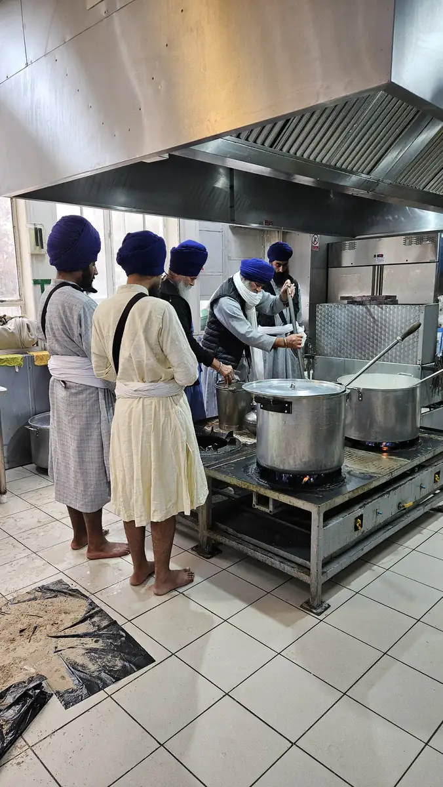
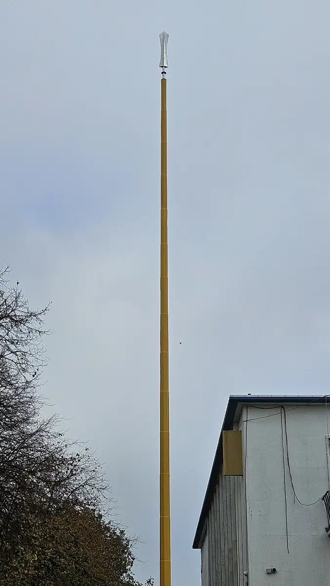

10.20am · Seva begins
Langar from first light
Long before the programme began, sevadars were in the langar kitchen preparing food for everyone who would come.
Outside, the bare Nishan Sahib stood on its new foundation, waiting for its Chola Sahib.

